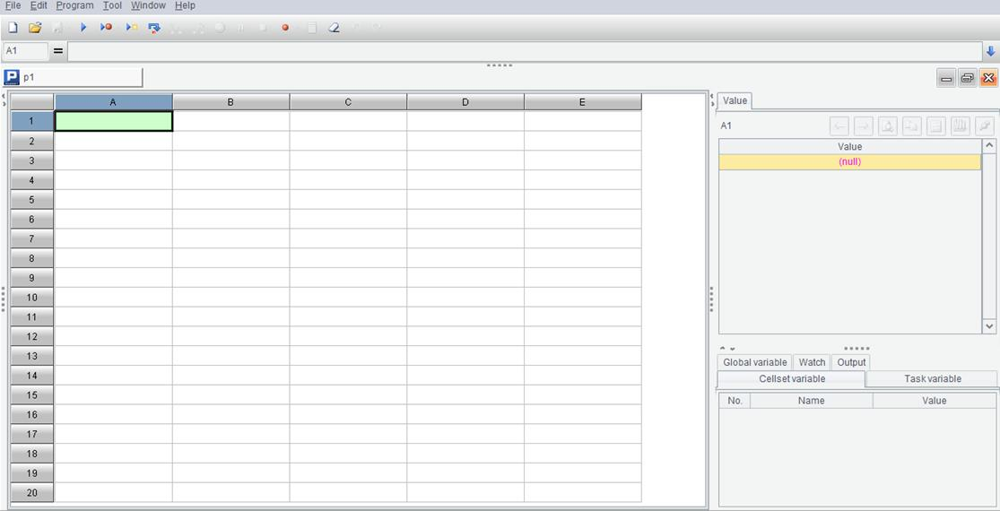
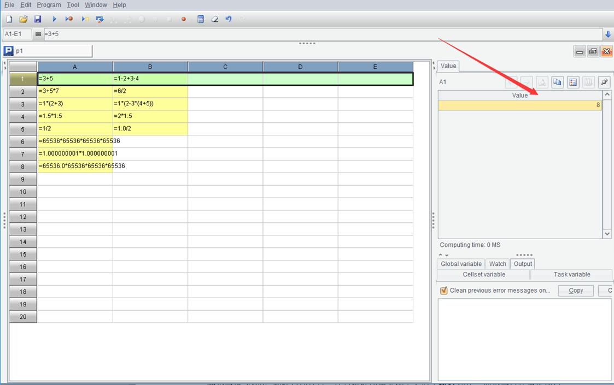

Start esProc, click File > New from the menu bar to get a grid interface below:

We write SPL code in this Excel-like grid, but of course this is not Excel.
Most programming languages only support text style code. Generally, the code is executed from front to back if no special code is to change the order. SPL is slightly different. SPL code is written in a grid which will be called a cellset later, where all cells are filled with codes and executed from front to back. Specifically, it is executed cell by cell. Each cell is executed from left to right in each row, and then the cell of the next row is executed. Though they are not essentially different, the grid style coding is more nonprofessional-friendly, which you will appreciate more as you know SPL better.
Programming books have been accustomed to starting with a simple “Hello,World” example program, a legacy of early command-line era and a third wheel for Contemporary GUI operating systems. And we just omit it.
A computer program should be able to do what a calculator can do. Let’s see how esProc does the arithmetic by coding in the cell:
|
|
A |
B |
|
1 |
=3+5 |
=1-2+3-4 |
|
2 |
=3+5*7 |
=6/2 |
|
3 |
=1*(2+3) |
=1*(2-3*(4+5)) |
|
4 |
=1.5*1.5 |
=2*1.5 |
|
5 |
=1/2 |
=1.0/2 |
|
6 |
=65536*65536*65536*65536 |
|
|
7 |
=1.000000001*1.000000001 |
|
|
8 |
=65536.0*65536*65536*65536 |
|
(Instead of taking a screenshot each time, sometimes we just code in the cell)
The equal sign preceding the code in each cell is compulsory (just hold your why for a while). The parentheses must be in English format; error will be reported if they are in the Chinese format (try finding what kind of error it will report).
Now press Ctrl-F9 to execute the program and the background of the code area turns pale yellow. Click a cell and you can view its value in the right-hand section:

Before the execution, the background of the code area is white and a click of a cell containing code will not display a value on the right-hand section. Unlike Excel, esProc does not compute automatically. Generally, computer programs do not automatically execute an action until a special Execute operation tells them to do that.
Look at those computed results:
Like an Excel formula, an esProc formula has multiplication represented by *, division by /, and performs computation in the order of multiplication and division first and then addition and subtraction.
Like an Excel formula, each layer in an esProc formula is represented by parentheses rather than brackets or braces, and error will be reported if the wrong symbol is used.
Also like an Excel formula, an esProc formula computes both positive numbers and negative numbers.
Results of A1, B1 and A2 are integers written without decimal points. Results of B2 and B4 are integers written with decimal points, as shown by 3.0. Why are there decimal points in the latter but there are not in the former?
Because computers identify numbers with decimal points and integers as different types of numbers. The former is floating point numbers and the latter integers.
We do not care the type of numbers when doing arithmetic. But in computer program, however, to identify the data type is a foremost and basic task, and critical for getting result correct because integers and floating-point numbers are stored and processed in different ways.
Is it necessary to distinguish integers from floating-point numbers since we can treat integers as floating-point numbers where the fractional part is 0? Why don’t we just use floating-point numbers?
It is mathematically OK. But there are technical problems for computers to perform the related operations. Since it is much simpler to store and compute integers than process floating-point numbers, processing integers of floating-point format is as inefficient as processing real floating-point numbers. So that is not a wise choice to make particularly when the computation mainly involves integers. As computers cannot know the difference, it is the programmers’ job to make the right decision.
Most programming languages differentiate integer from floating-point number but allow them to appear in the same expression. To compute the expression, we will convert the integer to the floating-point number (an integer can be always converted to a floating-point number, and not vice versa). The result of a division operation could be a floating-point number, so SPL specifies that the quotient should always be of the floating-point format to ensure that data type of the result is explicit and definite. SPL also defines a type of division operations that return integers. This type of division is represented by the backslash (\). See what =6\3 and what =5\3 will get respectively if you are interested.
Let’s move on to view A6’s computed result. It is 0. What happened?
A large number requires a larger space to be stored. The computer’s memory, however, is limited. The machine cannot represent an infinitely large number. We thus put a restriction on the size of data. Most contemporary programming languages have two representations for integers – 32-bit binary integers and 64-bit binary integers. This means the largest number computers can represent are 232 or 264 (The actual size is half smaller because the other bit is used to represent the negative number). Error will happen once the computed result exceeds the limit.
The largest integer SPL can handle is 64 bits. 655364 exceeds the limit and error happens. Unfortunately, almost all programming languages, including SPL, do not report the error but let it be. Programmers can only rely on themselves to avoid the mistake.
Why do the 32-bit integers and 64-bit integers are selected? Two foremost reasons are usability and efficiency. 32-bit integers are sufficient for most operations, 64-bit integers occupy too much space and are less computationally efficient, which makes them necessary only in certain few occasions, the 16-bit integers are often inadequate, and to invent another type of integers makes the list a little crowded (Actually 16-bit integers and even 8-bit integers were once used on early computers. Interestingly all these types of integers are 2n-bit. There have never been such bits as 18 or 25)
Like the other contemporary programming languages (early programming languages may have different conventions), SPL calls 32-bit number integers and 64-bit numbers long integers.
The fact is that both 231 and 263 are extraordinarily large numbers. Since it is rare that such a large number is used, it is not that important to dig deeper.
A7’s computed result is also not what we expect. And why?
Same as integers, storage space is limited for floating-point numbers. On the other hand, floating-point numbers are finite (approximately ±10308) and can only be represented by a limited precision of about 18 significant figures (Extra figures should be discarded). Thus A7’s error happens.
In addition – this is important, contemporary computers uses binary numbers to perform calculations. The binary counterpart of a decimal integer can retain the original precision. But a decimal finite decimal, such as 0.1, probably becomes a recurring decimal – you can think about the principle behind it yourself – which cannot be precisely represented by computers after it is converted to a binary number. Deviation can be accumulated to lead to unexpected error when the imprecise number undergoes a series of operations.
Yet, integers are always precise after a series of operations, and thus the first choice on all possible occasions.
Let’s look at A8. Unlike A6, it records 65536 as 65536.0, which tells the computer that this is a floating-point number instead of an integer. SPL will convert a number to floating-point format, which has a far greater range than integer, for computations to get the correct result instead of an over-limit number.
But what does 1.8446744073709552E19 mean?
This is the scientific notation conventionally used by all programming languages. Here it represents the number 1.8446744073709552*1019. In a cell code, number 1.23*10-20 can also be represented by 1.23E-20.
Apart from integers, long integers and floating-point numbers, other data types in SPL include huge numbers (which represent numbers of any length and precision but process slower), strings and date, time and datetime. All will appear in the following sections.
Understanding the basic data types is the foremost thing to learn a programming language.